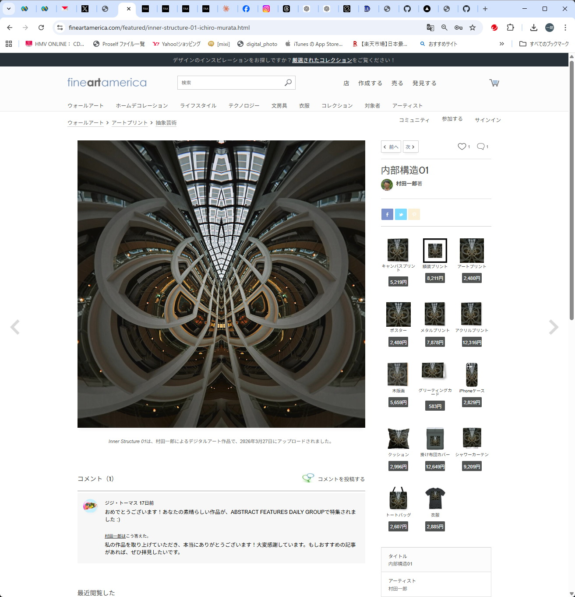
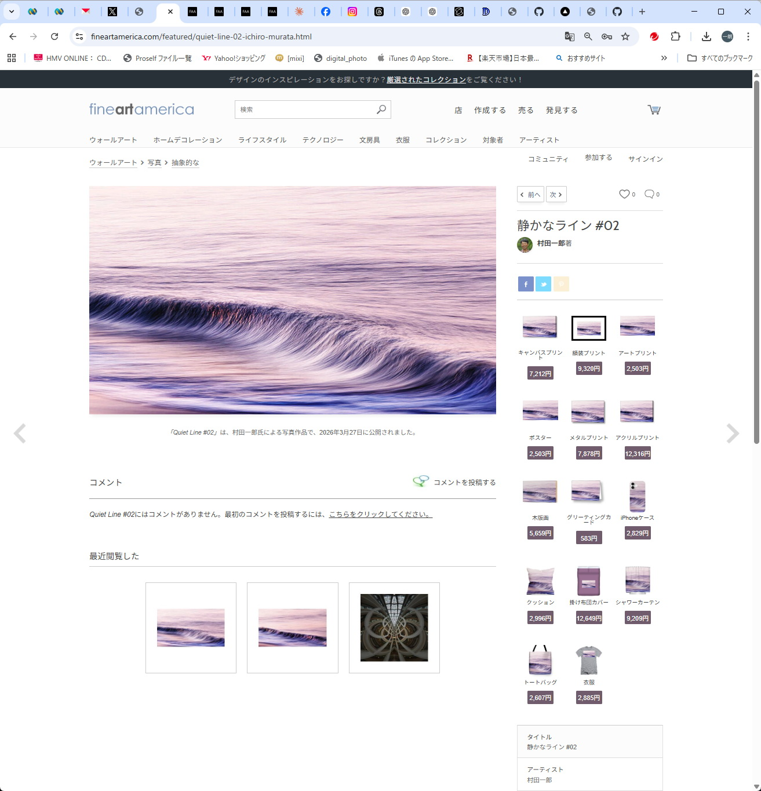
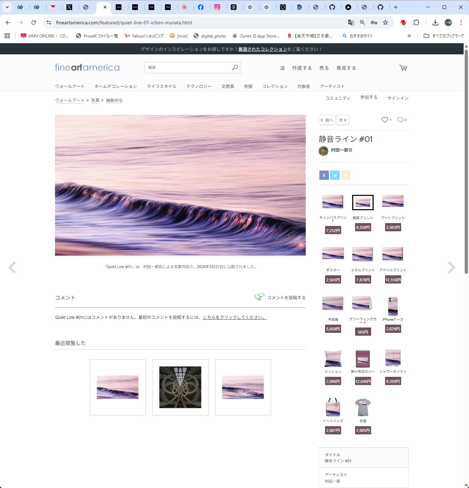

🖼 GALLERY
Ichiro Murata — Fine Art Prints
1X Award受賞を含む星景写真をファインアートプリントとして販売しています。
プリント・キャンバス・アクリルなど各種フォーマットに対応。
🏆 1X Award 受賞作品


"Selected and awarded on 1X, one of the most curated photo platforms worldwide."
販売中の作品（Fine Art America）


作品の入れ替えについて
掲載作品はFine Art Americaの無料プランの都合上、随時入れ替えを行っています。 最新の全作品は FAA プロフィールページ をご覧ください。